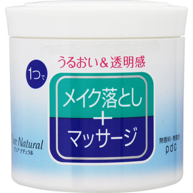

返回列表
产品名称：ピュア ナチュラル マッサージクレンジング

ｐｄｃ ピュア ナチュラル マッサージクレンジング １７０ｇ
メーカー ｐｄｃ
JANコード 4961989102788
商品の特徴
○1つで メイク落とし＋マッサージ
○無香料
- 成分・分量
- ＜成分＞ミネラルオイル、水、ＤＰＧ、トリエチルヘキサノイン、水添ポリイソブテン、ベヘニルアルコール、ステアリン酸ＰＥＧ－２５、ステアリン酸ソルビタン、水溶性コラーゲン、ヒアルロン酸Ｎａ、イソステアリン酸ＰＥＧ－２０グリセリル、ステアリン酸、カルボマー、水酸化Ｋ、トコフェロール、デシルグルコシド、ヒドロキシエチルウレア、フェノキシエタノール、メチルパラベン、プロピルパラベン
- 用法及び用量
- ＜使用方法＞適量（さくらんぼ大）を顔全体をやさしくマッサージするようにメイクとなじませます。水またはぬるま湯で 洗い流してください。